You can hear the phrase
"computers think in 1s and 0s"
a hundred times and still not understand how a computer actually works. It sounds like an explanation, but by itself it explains basically nothing. Sure, a wire can be high or low, a light can be on or off, and a switch can be open or closed. But how does that become addition?
How does that become memory?
How does that become a program sitting in RAM, one instruction after another, telling a machine what to do?
This article is going to walk you through how a CPU is built, starting with the simplest possible components.
We start with a simple circuit turning on and off a light bulb and work our way through fundamental digital logic and electrical engineering concepts.
Some resources stay extremely high-level, so you never really understand how a CPU actually works.
The deeper resources are amazing, but they are long, dense, and intimidating. And frankly, for someone who doesn't want that level of detail, a lot of it can often feel like too much. This article will hopefully help you understand what is going on under the hood, without exploding your brain or eating weeks of time.
The key point is that nothing here is smart in isolation. A CPU is not one hard idea. It is a very tall pile of simple ones.
(Full simple CPU drawing: a few labeled boxes, data bus, address bus, and some control wires)
We are going to try to understand this simple CPU. It is not a modern CPU with decades of optimization, but it has the same core functionality.
Let's start with a high-level overview of how the CPU functions, so we have a goal to work towards.
Imagine your computer is a house.
Inside this house is one stupid but surprisingly pedantic worker. His name is Otto. Also he never leaves his house.
Inside this house we have our downstairs desk where Otto does all the serious work. On the desk are a few things:
A, B, and PC
Diagram 1.1. The desk setup.
Upstairs is the filing cabinet room. The cabinet has slots labeled 0, 1, 2, 3, all the way up to 99.
Each slot holds one piece of paper with a two-digit number written on it, from 00 to 99.
One quick distinction before we start: when I say "drawer," I mean the desk drawers right next to Otto where he works. When I say "slot," I mean the numbered compartments in the upstairs filing cabinet.
Diagram 1.2. The filing cabinet.
Most of these slots are boring and filled with paper. But slot 98 is special. It's a little window
to the outside world. When Otto puts a number there, it doesn't get written on paper. It shows up on
a display. Put 00 there and it glows 00. Put 07 there and it glows 07. Otto can read, write, and
interact with it just as if it were any cabinet slot.
Slot 99 works the opposite way. It's connected to a dial outside the house. Otto reads from it like any other slot, but the value comes from whoever is turning the dial. He could technically write to slot 99 too, but that would be a bit disruptive.
Diagram 1.3. The outside of the house, with the display and input dial.
The important point for now is simple: the program itself also lives in the upstairs cabinet.
Instructions are just numbers stored in slots. Otto uses PC to know which slot to read next, then
uses the decoder chart to decide what that number means, and what procedure to follow based on each
instruction.
Diagram 1.4. Otto's basic loop. He reads the address in PC, fetches the number from that cabinet
slot, uses the decoder chart to choose what to do, does it, updates PC, and repeats.
Most instructions just move Otto forward to the next instruction. If PC says 10, Otto reads slot
10, follows that instruction, and then PC moves to the next relevant slot.
But some instructions are jumps. A jump changes PC to a different slot instead of moving forward.
That is how a program can loop, skip work, or do one thing if a value is 0 and another thing if it
isn't.
That is kinda just how your computer works: instructions live in memory, PC points at the next
one, the decoder chart says what each instruction means, and Otto repeats the same
fetch-decode-execute loop again and again.
Something like this is happening inside your computer right now.
Except there is no Otto.
Nobody is home.
Let's explore the basics of how electricity and circuits work for the purposes of this article.
Here is a simple circuit:
Diagram 2.1. The circuit.
We can think of the battery as being able to push charge around the loop. Current can only flow when this loop is completed.
If the loop is broken, nothing flows. A switch is simply a controlled break in the loop, allowing us to break and complete the loop whenever we want.
And a light bulb is just a simple light bulb. It glows when current flows through the filament.
Now we have a circuit that can do one yes/no thing. Current flows or it doesn't.
Now let's see if we can combine switches and relays so the circuit can "answer" slightly more interesting questions.
Let's assume we want to build a simple dog washer circuit: a circuit that, based on some inputs, can tell us whether to wash our dog or not.
Our simple circuit is going to use a light bulb being on to mean yes, wash the dog. Light bulb off means no, don't wash the dog.
So let's start with an extremely simple version with two switches.
In this first version, the switches are directly inside the bulb circuit. The person using the circuit can open or close each switch to answer a yes/no question.
Let's say switch 1 represents STINKY: whether the dog is stinky or not. Switch 2 represents
OLD_WASH: has it been more than 5 days since the last wash.
So the rules for our first circuit are:
if STINKY AND OLD_WASH, the bulb is on.
Or in other words, if the dog is stinky and its last wash was over 5 days ago, then wash the dog.
Let's see the circuit:
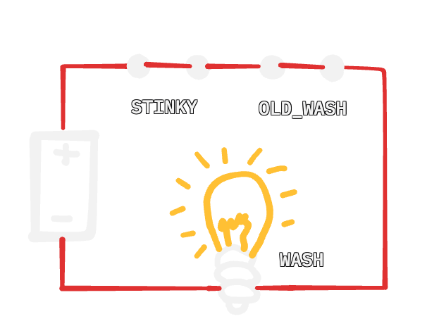
Diagram 3.1. The hand-switch version of AND.
This circuit shows a logical AND operation. A person is flipping the switches manually. The output turns on only when both inputs are true.
Now let's introduce a new input: MUDDY, if the dog is muddy.
Now the rules of the circuit change:
if (MUDDY OR STINKY) AND OLD_WASH
All this says is, if the dog is muddy or stinky and it's been at least 5 days since the dog's last wash, you should wash the dog.
Now let's focus on the (MUDDY OR STINKY) part of this circuit:
Diagram 3.2. The hand-switch version of OR.
This is a logical OR: either MUDDY or STINKY needs to be on for the bulb to turn on.
Now lets combine the two to form the complete circuit.
But now we have a problem.
The MUDDY OR STINKY circuit outputs its result with an electrical signal: on or off.
Our previous AND circuit relies on a human flipping a switch in order to compute a result.
Or in other words the OR circuit we built outputs a result as electricity, but the AND circuit we want to combine it with expects a input as a metal switch physically being moved. A signal in a wire can't reach over and somehow close that switch.
Diagram 3.3. The problem we currently face.
So if we want to chain circuits together, we need a way for an electrical signal to control a switch automatically. How can we do this?
Electromagnetic relays, that's how. (or at least that is one of the early solutions to this problem, we will talk about other solutions a little more later on)
This probably sounds quite complicated, but it is just a magnet powered by electricity.
Here is how it works:
One thing to mention: if you see several little batteries in a circuit, don't interpret that as several totally separate power sources. I am using the battery drawing as a symbol for "this point is connected to power," so the diagram doesn't turn into spaghetti.
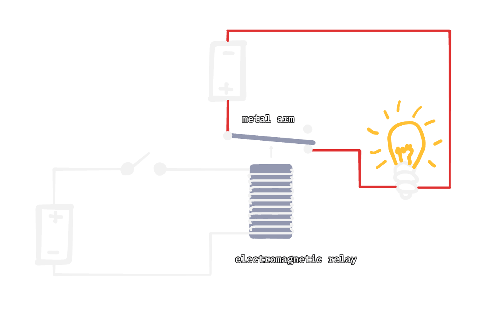
Diagram 3.4. An electromagnetic relay.
This relay is made from a coil of wire and a movable metal arm. When current flows through the coil, the coil becomes a magnet and pulls the arm down. When current stops, a spring pulls the arm back up.
A relay lets one circuit open or close a switch in another circuit. The two circuits stay separate, but the relay arm physically connects them.
Also in this example we end up using a switch in the input circuit anyway, but any kind of electrical signal could be used, like the output of another circuit, the switch is just to demonstrate how the relay works.
As you can also tell by the diagram, there is a slight delay between the coil turning on and the metal arm moving. Relays are mechanical, so they do not switch instantly.
Now lets see how we can build an actual electrical AND gate that takes in as input, 2 wires, and outputs an electrical signal.
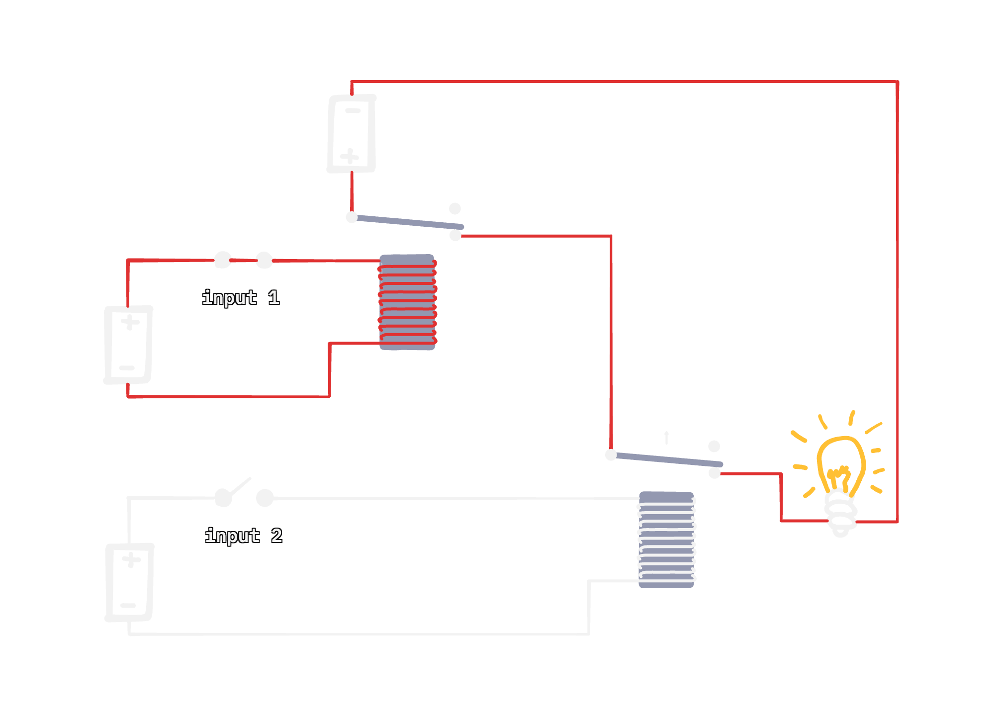
Diagram 3.5. An AND gate.
If both inputs have signal, then the output circuit forms a complete loop. The output circuit has 2 breaks which are both controlled by each input.
Using these relays chained in clever ways, you can create every fundamental logic gate, such as the OR gate:
But before the next diagram, I am going to use one more new symbol: ground.
For the purposes of this article the ground symbol will simply refer to the common return point of the circuit usually connected to the negative side of the battery.
Every point marked with the ground symbol is connected together, as if there were hidden wires joining them underneath the drawing. It is not a new component. It is just a less messy way to draw the return path of the circuit.
The circuits are still loops. I am just not explicitly drawing the return wire anymore.
In a real schematic, the ground symbol itself would usually stay white. In these diagrams, I sometimes color it red when that return point is part of the active path for that frame. I think it makes the current path easier to follow visually.
This is how the ground symbol looks:
Diagram 3.6. The ground symbol.
Now here is the OR gate:
Diagram 3.7. An electronic OR gate.
That is an OR gate using relays. Now here is the full dog washer circuit up to this point:
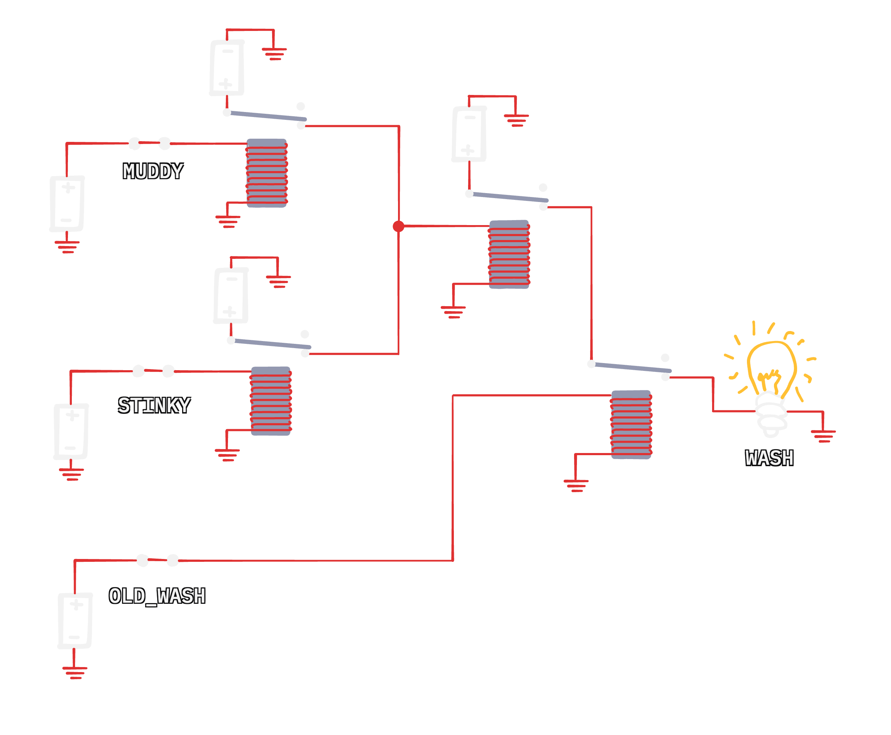
Diagram 3.8. The full dog washer circuit built with relays.
The animation does not show every possible combination of switches, only a handful. But in a nutshell, if any of the first 2 inputs are on, and the third the bulb will be on. I hope it makes sense how it works.
Okay, now let's introduce one last input, or "sensor": RAIN_SOON, whether it is predicted to rain soon.
The rules of the circuit change once again:
((MUDDY OR STINKY) AND OLD_WASH) AND NOT RAIN_SOON
The parentheses indicate order of operations. This should be pretty familiar. So in plain English:
If the dog is muddy or stinky and it's been at least 5 days since the dog's last wash and it's not going to rain soon, then wash the dog.
Let's focus on this NOT for a second. NOT just inverts a signal: if it receives signal, it outputs no signal; if it receives no signal, it outputs signal.
That is what a NOT gate does.
Diagram 3.9. A NOT gate.
Now before we look at the completed circuit, lets learn some basic logic gate symbols.
An AND gate is drawn like this:
Diagram 3.10. An AND gate.
This symbol represents the AND circuit we made previously.
An OR gate is drawn like this:
Diagram 3.11. A OR gate.
This symbol represents the OR circuit we made previously.
Whenever I use these symbols moving forward, they can directly translate to the circuits with the relays I showed you previously, the inputs and outputs are the same, but the internal components stay hidden for cleanliness sake.
Here are three more useful gate symbols:
Diagram 3.12. NOT, NAND, NOR gates.
NAND is just AND but then flip the result, so AND + NOT or NAND. Same with NOR. OR + NOT = NOR.
I hope the pattern makes sense now, any regular gate with a circle at the end flips its output.
With our knowledge about logic gates, let's create the "should-I-wash-my-dog 5000" machine!
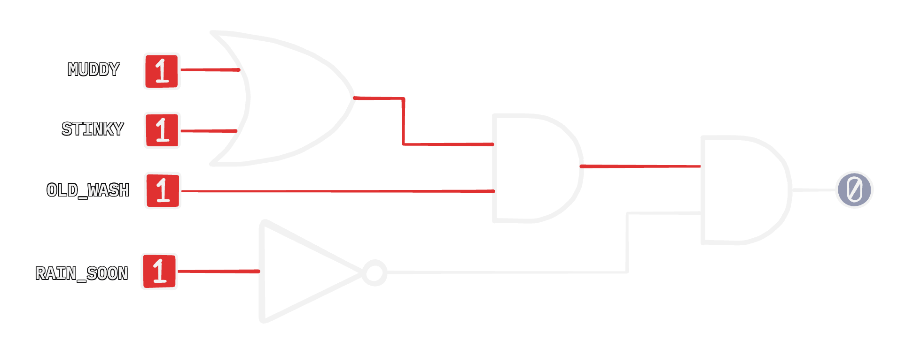
Diagram 3.13. The final dog washer circuit.
Again this animation doesn't cover all possible states.
Keep in mind these electromagnetic relays we used in the examples are quite big and slow.
Relays aren't the only solution. They are simply one of the early and intuitive methods to understand, and many real computers like the Harvard Mark I actually used these types of relays.
In modern computers a similar behavior is achieved by using transistors. If you want to learn more about transistor based logic gates: visit this site I don't know about you, but addition seems like a pretty logical next step to these logic gates. But not so fast.
This is how circuits make yes/no decisions. Not by understanding what MUDDY means, but by wiring
simple gates so the output turns on only for the input pattern we care about.
A wire is just a wire. We gave these wires meaning. We decided that
one wire means STINKY, another wire means MUDDY, and another means RAIN_SOON.
To make a CPU, we need to give wires a different kind of meaning: numbers. Before we can build a circuit that adds, we need a way to represent numbers using only on and off.
That is what the next section is about.
Okay before we continue with this section, let's define some terms.
A wire with no signal is 0, and a wire with signal is 1. Let's call one wire, one bit. A bit can
either be 0 or 1.
These are just labels that represent the state of a wire.
Diagram 4.1. 0's and 1's.
If we want to represent numbers using wires, we are going to need more than one wire, because one
wire can only represent up to two numbers, since it only has two possible states: 0 or 1.
But two wires have 2^2, or four states, and three wires have 2^3, or eight states. That would allow us to
represent more numbers.
Here are all the possible states we have with 3 wires:
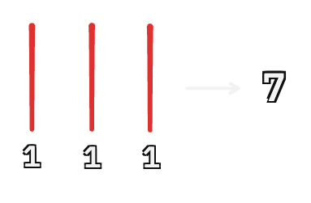
Diagram 4.2. States with 3 wires.
We can represent 8 numbers just like this. The more wires we add, the more numbers we can represent.
But, why does 010 mean 2? Why does 101 mean 5? Is it just randomly assigned?
Not exactly. To understand this, let's take a quick detour to decimal, a.k.a. base ten.
Diagram 4.3. The decimal system.
In our decimal counting system, each place value is a multiple of 10. That is because we have ten digits: 0-9.
This exact same place value logic can apply to the binary system too. We have two digits, 0 and 1, so each place is a multiple of 2.
Diagram 4.4. The binary system.
So all binary is, at the end of the day, is decimal but with only two digits instead of ten.
A few examples:
101 means 51101 means 13101010 means 421100011 means 99You don't need to do these problems in your head, but I hope the idea of how binary works makes sense.
Let's walk through 1101 together.
Diagram 4.5. An example in binary.
The binary system works the same way as decimal. The only difference is that instead of multiplying the digit by a power of 10, we multiply it by a power of 2. That's it.
So now that we can represent numbers with wires, how can we add numbers together? How can we compute sums. That is what the next section is all about.
Diagram 4.6. Addition?
Let's start with a brief reminder of how we algorithmically add two decimal numbers.
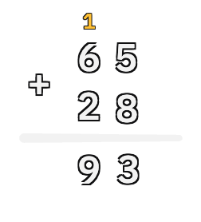
Diagram 5.1. Standard decimal addition.
We start at the rightmost column, do 5+8, get 13, we carry the 1. So we write 3 as the sum, and 1 as the carry. We then move left and repeat over and over remembering to add any carry-in values. Binary addition works the same way.
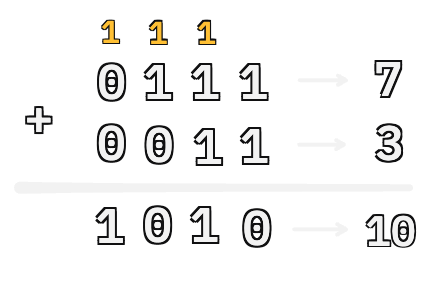
Diagram 5.2. Binary addition.
This works the same in binary because if we have:
1 + 1 gives 10, which is binary for 2.
So the sum bit for that column is 0, and the carry is 1.
1 + 1 + 1 gives 11, which is binary for 3. So the sum bit is 1, and the carry is 1.
How can we build a circuit using logic gates that performs this standard addition algorithm?
Well, let's start with the rightmost column. If we think about it, all the possible states are:
A |
B |
Sum | Carry |
|---|---|---|---|
| 0 | 0 | 0 | 0 |
| 0 | 1 | 1 | 0 |
| 1 | 0 | 1 | 0 |
| 1 | 1 | 0 | 1 |
So just 0 + 0, 1 + 0, 1 + 1, or 0 + 1. That's it! If we can make a tiny circuit that takes two inputs,
and produces two outputs that match these combinations, we have added the first column.
This is called a half adder. A half adder adds two bits, but it does not handle a carry-in value. That is the job of a full adder.
Let's first build this half adder.
Let's start by computing the sum, not the carry-out.
This is what we want our circuit to do:
A |
B |
Sum |
|---|---|---|
| 0 | 0 | 0 |
| 0 | 1 | 1 |
| 1 | 0 | 1 |
| 1 | 1 | 0 |
The sum is 1 only when exactly one input is 1.
This is called XOR short for exclusive OR.
If we combine an OR gate and a NAND gate, and AND them together we get XOR:
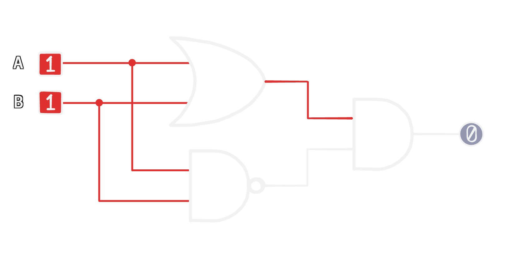
Diagram 5.3. Half adder sum / XOR.
OR checks that at least one input is on, and NAND makes sure that both inputs are not on.
Here is how an XOR gate looks:
Diagram 5.4. An XOR gate.
Now lets do the carry value. The carry is simple! We only want to carry if we are doing 1 + 1, so we
we just use an AND gate to check if both inputs are on.
Now here is our half adder:
<diagram, use the xor gate>
Now lets package up our half adder into a little box:
Now that we have a half adder, we can add the rightmost column. That works because the rightmost column has no carry-in from a previous column. It only needs to add two bits.
So if we have a number like this:
1111
The half adder can handle the first column: 1 + 1. That gives us a sum bit of 0 and a carry-out
of 1.
But now the next column has three things to add: 1 + 1 + 1. The two original bits, plus the carry
from the previous column.
A half adder cannot do that. It only accepts two inputs. To continue adding across multiple columns,
we need a circuit that can take three inputs: A, B, and carry-in.
To add three binary numbers we use two half adders and a OR gate:
This might look confusing at first. What if both half adders output a carry at the same time?
That actually never happens. If a half adder outputs a carry, the sum bit is always 0. So both are not able to output carries. Take a moment to think about this if you are confused.
So we can confidently OR the two carry outputs together. If either one is 1, the full adder's
carry-out is 1.
Let's again package this up into a box:
<diagram, full adder>
We have made a full adder!
Now we can chain full adders together to add two 8-bit numbers. One 8-bit number can represent any number form 0-255.
Each full adder handles one column. The carry-out from one column becomes the carry-in for the next column. That is it! That is all addition is!
Now let's package that up into a box once again:
<diagram, animated>
The adder can also produce little status wires, called flags.
For example, if the answer is 00000000, a ZERO flag can turn on. If addition spills past eight bits,
a CARRY flag can turn on. So 11111111 + 00000001 gives 00000000 with carry-out 1.
I don't want to go deep into flags yet. Just remember that the adder can output little yes/no facts about the sum. That matters later for instructions like "jump if zero." But let's not get ahead of ourselves.
Now let's see if we can build a circuit that counts by ones.
The obvious idea is to feed the output of the adder back into one of its inputs. Start with
00000000, add 00000001, get 00000001. Feed that back in, add 00000001 again, get
00000010. Then 00000011, then 00000100, and so on.
That seems correct at first glance.
But there is a big problem. An adder just looks at its current inputs and computes an output.
So if we wire the output straight back into the input, there is no stable value anymore. The adder is basically being asked to make a number equal to itself plus one:
input = input + 1
That can never settle. As soon as the output changes, the input changes too, which means the output has to change again, which means the input changes again.
With relays, you might physically see this mess. With transistors, it would happen so super insanely quickly.
There is no boundary between the old value and the new value.
There is no clean "step 1, step 2, step 3." No controlled flow or process.
So this is not enough. We need a circuit that can hold a value still, then update it only when we tell it to.
That is the next problem: memory.